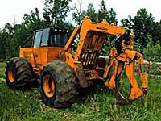
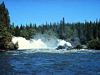

Exchange of Gases
Nutrient Cycling
Wildlife Habitat
Water Cycle
Soil Conservation
 We, as humans, have an uncanny ability to alter our world and the majority of time it is not 'for the better'. Forests, too, have the ability to affect the surrounding environment in which they exist. How is this possible and what parts of the environment are affected? This can be answered by looking at the most noticeable part of forests - trees. |
The dominant living (biotic) part of the forest is the trees themselves. Trees are complex organisms that play a vital role in the environment in: |

Trees obtain the necessary energy and raw materials to build and maintain their own living tissues from the sun, soil, air and water. |

Trees do this through the processes of photosynthesis and respiration. During the course of these activities, trees both consume and produce atmospheric gases. For photosynthesis, they use carbon dioxide (together with water) to manufacture simple sugars and release oxygen as a by-product. All the oxygen in the earth's atmosphere was put there by this activity of trees and other green plants. For respiration, trees use oxygen to "burn" the sugars and provide energy for their growth, releasing carbon dioxide as a waste. We can release even larger amounts of the carbon locked in the structure of a tree by burning the wood. |

Through photosynthesis, trees turn the non-living into the living; they are called the producers in the ecosystem. The material that they produce - in the form of leaves, branches, trunks and roots - is passed on to the other living organisms in the system when parts of the tree are eaten or decomposed. The eaters, or consumers, in the system, are the animals that feed on the plant-feeders. |
All animals, ultimately, are fed by plants, turning the plant tissue into animal tissue as part of a massive cycle of nutrients. The cycle of nutrients continues when both plants and animals die. Their dead tissues are broken down by the activities of such organisms as bacteria and fungi (called decomposers). Nutrients are thereby released from the once-living matter and pass back into the soil, where they can be taken up by plants. In this way, material is constantly recycled from living to non-living and back again, from the old to the new, building up then breaking down, without ever interrupting the flow of matter and energy. |
In the forest ecosystem, plants provide more than just food for the animals, but also building materials for homes such as nests and beaver dams, perches and crevices for lookout posts and hideaways as well as providing shade and camouflage. In these and many other ways, the plants provide wildlife habitat within which animals can carry out their life functions. |
 The roots and soil, under the forest floor, are parts of the forest ecosystem that are hidden from sight. It is through the roots that the dissolved nutrients in the soil begin their pathways up into the tree. The roots absorb the nutrient containing water to all tree tissues. After passing through the tree, excess water evaporates from the leaves in the process of transpiration. This movement of water from the soil to the air through the trees is an important part of the global water cycle. The water cycle itself consists of various stages;
|
Another important function of the roots is to anchor the tree securely into the ground, giving it the support that allows the growth of a heavy trunk and branches. On average, the volume occupied by the roots below the ground is about equal to the volume taken up by the branches above them. The network of roots also holds the soil firmly in place, helps water penetrate deeply, and prevents soil erosion. In deciduous forests, falling leaves add their matter to the soil to create a deep, rich layer of humus. |